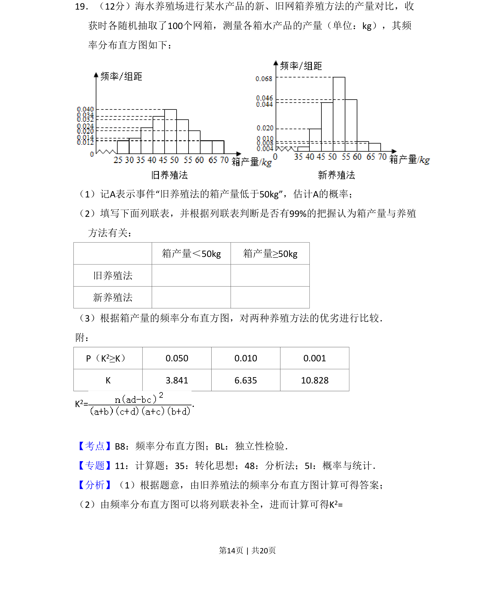
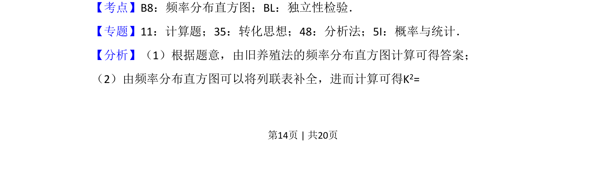
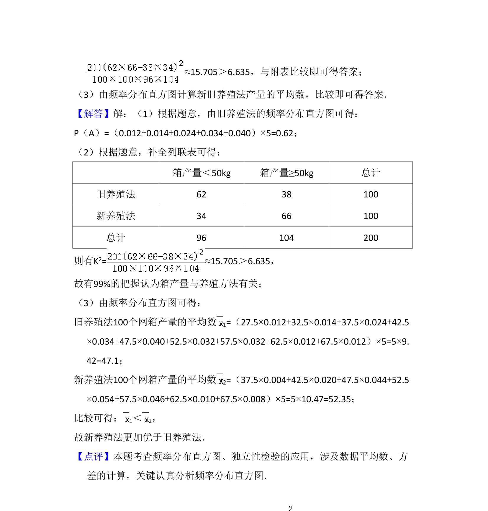

考点：频率分布直方图 独立性检验 列联表

该题考查频率分布直方图读取概率、列联表填写与独立性检验的比较。


📄 原 PDF 第 14 页：
素材/真题/吉林/2008-2024·（吉林）数学高考真题/2017年高考数学试卷（文）（新课标Ⅱ）（解析卷）.pdf
19．（12分）海水养殖场进行某水产品的新、旧网箱养殖方法的产量对比，收 获时各随机抽取了100个网箱，测量各箱水产品的产量（单位：kg），其频 率分布直方图如下： （1）记A表示事件“旧养殖法的箱产量低于50kg”，估计A的概率； （2）填写下面列联表，并根据列联表判断是否有99%的把握认为箱产量与养殖 方法有关： 箱产量＜50kg 箱产量≥50kg 旧养殖法 新养殖法 （3）根据箱产量的频率分布直方图，对两种养殖方法的优劣进行比较． 附： P（K2≥K） 0.050 0.010 0.001 K 3.841 6.635 10.828 K2=．
【考点】B8：频率分布直方图；BL：独立性检验．菁优网版权所有 【专题】11：计算题；35：转化思想；48：分析法；5I：概率与统计． 【分析】（1）根据题意，由旧养殖法的频率分布直方图计算可得答案； （2）由频率分布直方图可以将列联表补全，进而计算可得K2=